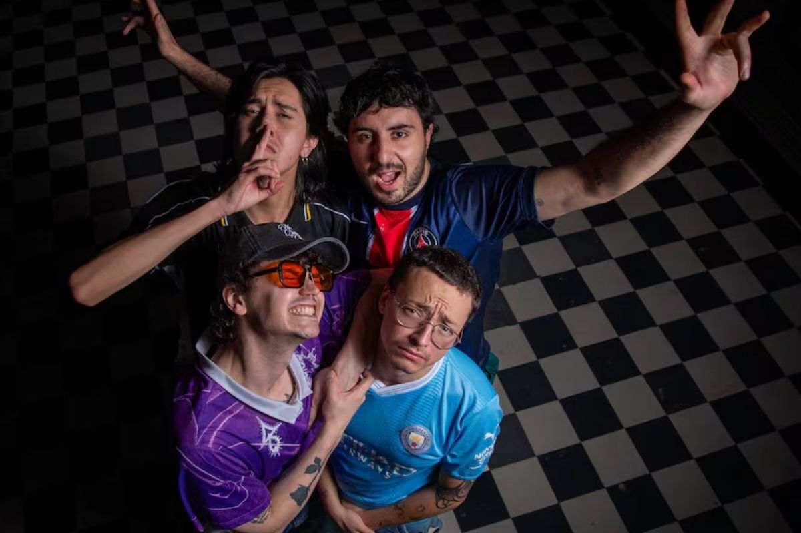
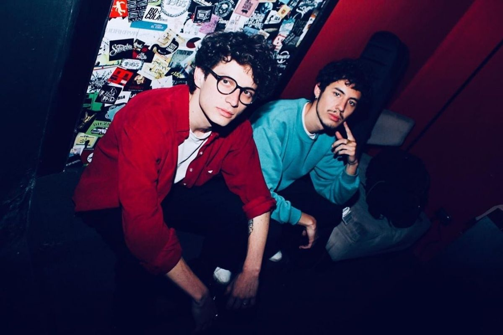
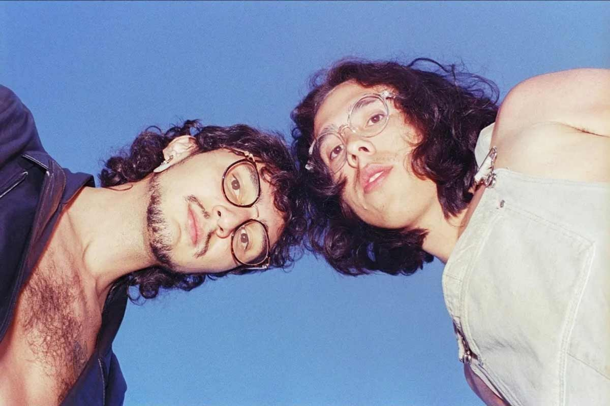
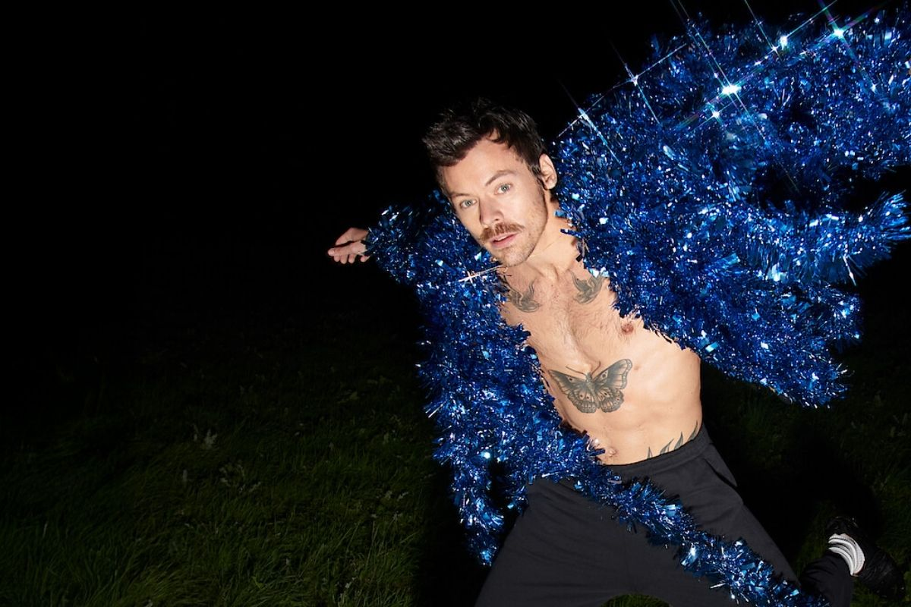
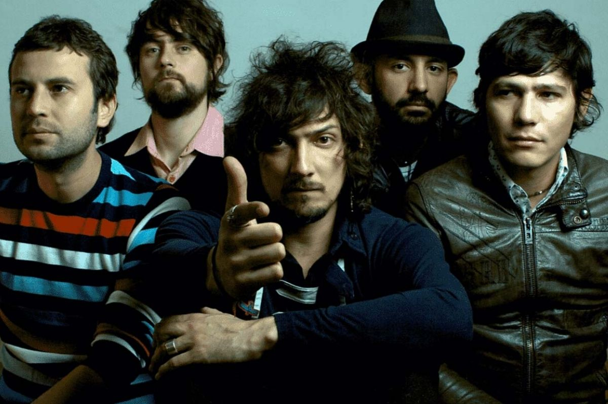

Estos son algunos de mis artistas favoritos que te harán conocer un poco de mi historia musical:

Es una banda ecuatoriana que destaca por tener un estilo muy auténtico y fuera de lo común. Su música mezcla sonidos alternativos y experimentales, creando canciones con mucha energía y personalidad dentro de la escena independiente del país.
Top canciones favs:
Es una banda ecuatoriana conocida por su estilo suave y nostálgico. Su música combina sonidos indie y dream pop, creando una atmósfera tranquila y envolvente que transmite muchas emociones.
Top canciones favs:
Es una banda de indie rock originaria de Quito. Se caracteriza por sus letras emocionales y sonidos melancólicos que conectan fácilmente con quienes disfrutan de la música alternativa y las canciones con sentimiento.
Top canciones favs:
Es un cantante y compositor británico que comenzó su carrera en One Direction y luego se consolidó como solista. Además de su música, es conocido por su estilo creativo, su presencia en la moda y su capacidad para reinventarse en cada etapa artística.
Top canciones favs:
Es una de las bandas más reconocidas del rock alternativo en Latinoamérica. Su música mezcla sonidos psicodélicos y letras profundas, logrando un estilo muy característico que ha marcado a varias generaciones.
Top canciones favs:Es uno de los artistas más importantes del hip hop actual. Sus canciones destacan por contar historias profundas y abordar temas sociales, personales y culturales a través de letras muy trabajadas y un estilo único.
Top canciones favs: